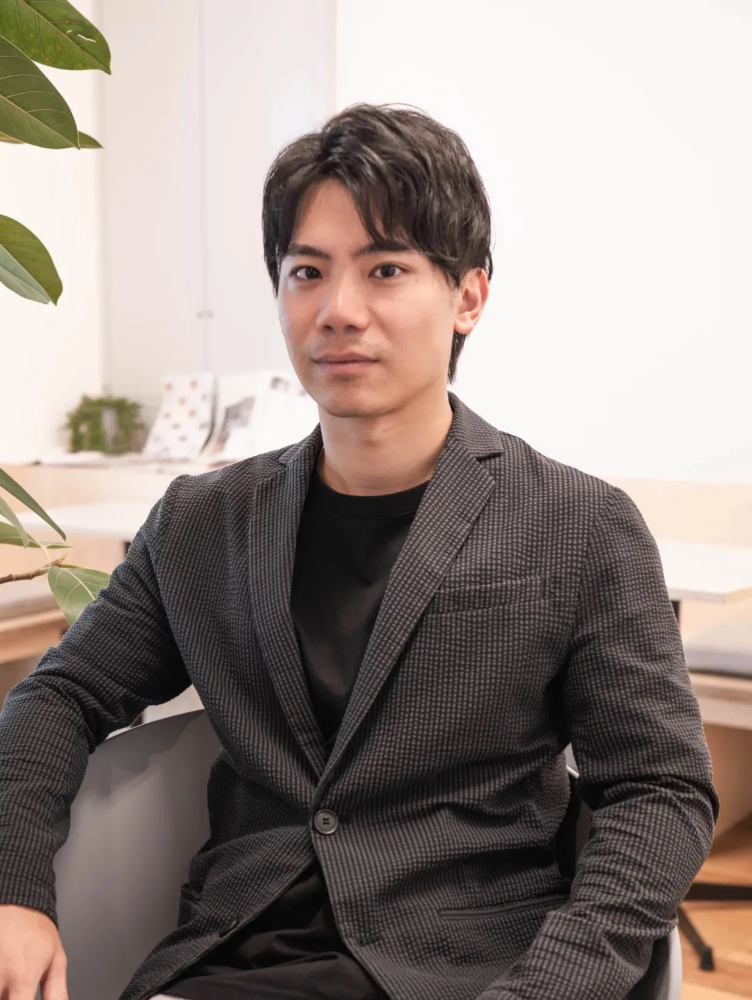
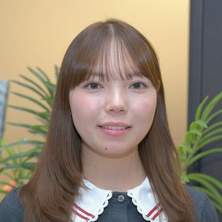
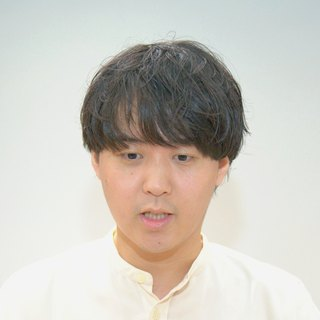
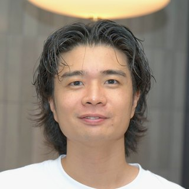
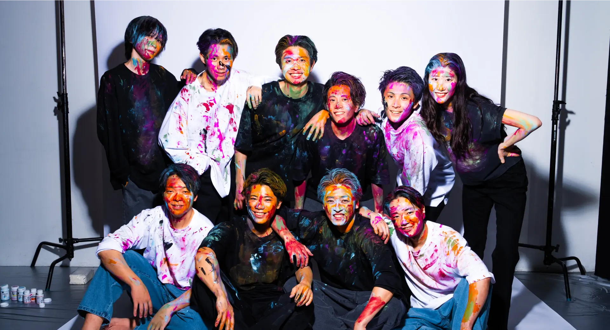
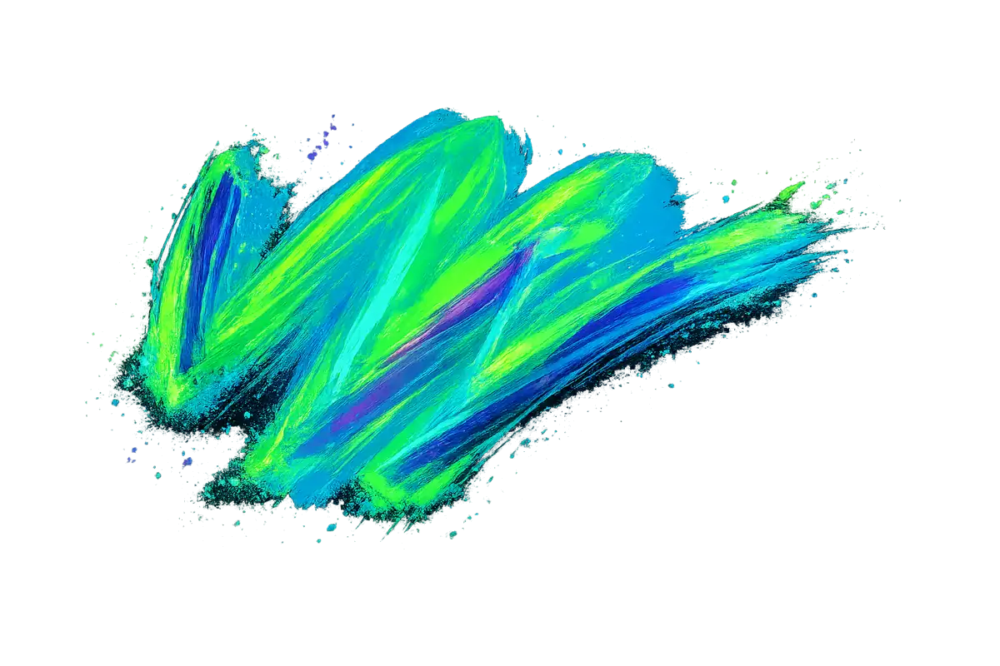

#Recologneが大切にする価値観
#Culture Essences
- かっこいい大人になろう
- 自分の意志がある人が正義
- 仕事を通じて自己実現
- 若手が主役の会社
- 悩んだら挑戦する
- 現状維持は衰退、変化を恐れない
- Team Recologne
- Work Hard Play Hard
- 正当な評価と挑戦機会を提供する
- 仲間に求めるのは人柄と熱量だ
- 他者へのrespectを忘れない
- かっこいい大人になろう
- 自分の意志がある人が正義
- 仕事を通じて自己実現
- 若手が主役の会社
- 悩んだら挑戦する
- 現状維持は衰退、変化を恐れない
- Team Recologne
- Work Hard Play Hard
- 正当な評価と挑戦機会を提供する
- 仲間に求めるのは人柄と熱量だ
- 他者へのrespectを忘れない
#採用メッセージ

10年後も色褪せない
新しい事業を、
たのしみながら創る。
皆さんこんにちは。代表の澤野です。私たちはデジタルマーケティング事業を主軸に、たのしみながら働く仲間を探しています。
変化の激しい時代において、10年後も色褪せない新しい事業を生み出し続ける会社でありたいと思っています。成長するマーケットで再現性のあるノウハウを積み上げつつ、裁量を持って新しい挑戦ができる環境があります。
皆さんもぜひ、私たちと一緒に未来に挑戦しましょう！
代表澤野 優介
数字で見るRecologne
ABOUT US
Recologneのことを、
数字で。
売上や実績だけでなく、はたらく人の環境や制度も含めて、ありのままの姿を数字で見える化しています。
平均年齢
0歳
20代・30代を中心に、若手からベテランまで幅広い世代が活躍しています。
従業員数
0名
少数精鋭のチームで、一人ひとりが裁量を持って挑戦しています。
女性比率
0%
性別に関わらず活躍できる環境づくりを推進しています。
有給消化率
0%
オンとオフを大切に、メリハリのある働き方を実現しています。
中途入社比率
0%
多様なバックグラウンドを持つメンバーが新しい視点を持ち込んでいます。
定着率
0%
居心地の良いチームづくりが、高い定着率につながっています。
MEMBER'S VOICE / 社員インタビュー
POINT OF VIEW
社員から見た
Recologne

田中 美咲
"裁量が大きく、新しい施策をすぐ試せる環境。1年目からクライアントの戦略設計を任せてもらえました。"

佐藤 健太
"成長中の事業に挑戦できるのが魅力。数字の変化がダイレクトに見えるのでやりがいがあります。"

鈴木 陽菜
"風通しがよく、部署を超えて相談しやすい。プライベートも大事にしながら働けています。"
#求める人物像

-
01 / ENJOY
仕事をたのしみたい人
-
02 / HONESTY
素直で良い人
-
03 / CHANGE
変化を恐れない人
-
04 / GROWTH
成長意欲のある人
-
05 / AMBITION
本気で稼ぎたい人
-
06 / CHALLENGE
新しいことに
挑戦したい人 -
07 / TREND
トレンドや
流行に 敏感な人 -
08 / TEAM
個人より
チームで 勝つのが 好きな人 -
09 / COMMUNICATION
人との
コミュニケーションが 好きな人
#福利厚生・制度
-
01CORE TIME — NONE
フレックスタイム制
コアタイムなし。ライフスタイルに合わせて柔軟に働けます。
-
02UP TO 2 DAYS / WEEK
リモートワーク
週2日まで在宅勤務が可能。移動時間を有効活用できます。
-
03100% COVERED
書籍購入支援
業務に関する書籍は会社が全額負担で購入できます。
-
04EXAM & COURSE FEES
資格取得支援
業務関連資格の受験料・講座費用を補助しています。
-
05MONTHLY
社内イベント
月1回の全社会や部活動支援で部署を越えた交流を促進。
-
06SPECIAL LEAVE
慶弔・特別休暇
結婚・出産・慶弔時の特別休暇を用意しています。
#選考フロー
-
STEP 01 / ENTRY
エントリー
-
STEP 02 / SCREENING
書類選考
-
STEP 03 / 1ST INTERVIEW
一次面接
-
STEP 04 / FINAL INTERVIEW
最終面接
-
STEP 05 / OFFER
内定
#よくある質問
A.はい。意欲や人柄を重視した中途採用も積極的に行っています。
A.通常は書類選考の後、一次面接・最終面接の2回で内定まで進みます。
A.職種により、週2日までの在宅勤務が可能です。
A.私服勤務OKです。オフィスカジュアル程度を推奨しています。
